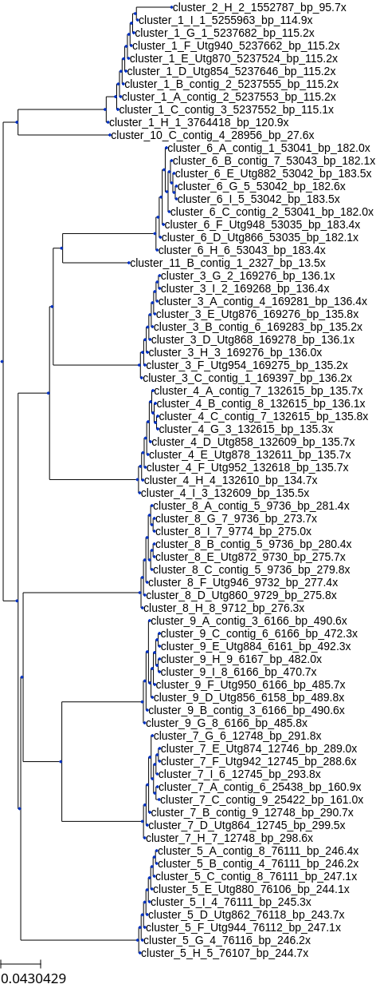

Content from Bacterial Genome Assembly using Trycycler
Last updated on 2024-04-19 | Edit this page
Estimated time: 32 minutes
Overview
Questions
- Why use Trycycler to assemble bacterial genomes with long-read data?
Objectives
- Understand common errors that can occur during assembly
- Become familiar with the Trycycler approach
Introduction
Bacterial genomes are dynamic landscapes. They may frequently lose and gain both chromosomal and extrachromosomal elements such as insertion sequences (IS), REP sequences, ICE elements, plasmids and prophage.
This can be particularly interesting to food microbiologists in the context of adaptations to dynamic niches - such as during food fermentations! In order to detect and characterise this kind of genomic plasticity, we require high quality bacterial genome assemblies which are both:
- Complete - one contig per replicon
- Accurate - fully match the actual DNA sequence of the organism
Short-read sequencing (e.g. Illumina) generates highly accurate reads, but the short length of reads (typically 150-300bp) cannot resolve repetitive or difficult-to-sequence regions, resulting in fragmented draft assemblies. Importantly, dynamic genome elements such as IS, REP and ICE are often themselves repetitive, meaning that their presence is not reflected in the draft assembly, yet they can be quite influential on the phenotype of bacterial isolates.
Insertion sequences (IS) are short genomic elements which are
frequently found in bacterial genomes. They can shape genomes as they
move around, potentially introducing deletions, mutations and
influencing gene expression. 
REP sequences are genomic regions containing highly repetitive and
palindromic sequences. They are often located in the the extragenic
space of some bacterial genomes e.g. ERIC (Enterobacterial Repetitive
Intergenic Consensus) sequences in the Enterobacterales. 
Integrative and Conjugative Elements (ICEs) are mobile genetic
elements capable of moving between hosts and donors through conjugation.
They are flanked on either side by direct repeat sequences, which allow
them to excise via site-specific recombination. 
Assembling the “perfect” bacterial genome?
Bacterial genome assembly remains an open problem - Torsten Seeman, immortalises this concept in the stdout of his assembly pipeline Shovill: “Remember, an assembly is just a hypothesis of the original sequences”!
Hybrid bacterial whole-genome assembly combines the accuracy of short reads with the additional information provided by long reads generated on Oxford Nanopore Technologies (ONT) platforms. Previous approaches used a “short-read-first” approach, only using long reads to connect short contigs generated from Illumina data. Improvements in yield and accuracy of ONT data has caused a gradual shift in the field to “long-read-first” pipelines, using short reads only for the polishing of long-read assemblies.
Note: this is by far from the only possible pipeline and does not
include, for example, PacBio sequencing. 
Other pipelines exist which completely automate the long-read
assembly process, such as Hybracter (https://github.com/gbouras13/hybracter) or Dragonflye
(https://github.com/rpetit3/dragonflye). Trycycler on the
other hand is deterministic and requires manual intervention at
different points. So, one of the obvious questions could
be: why dedicate extra time to using Trycycler?
It is possible to assemble a bacterial genome and find that it is “closed” as one circular chromosome - however it may not be very accurate or in fact complete! Long-read-only assemblies can contain a variety of errors, such as “indels” (deletions ~50bp), or missassemblies where contigs are joined in incorrect orientations.
Overview of Trycycler
Trycycler is a tool developed by Ryan Wick and colleagues to address an issue they had uncovered in previous benchmarking work. Several long-read assembly tools exist for genome assembly, each with their own strengths and tendency to generate certain assembly errors, for example:
- Flye: fast, accurate, has dedicated plasmid setting, high RAM usage
- Raven: fast, low RAM usage, issues with circularisation and missing small plasmids
- Miniasm (within Unicycler): good at achieving circularisation, but not the best at completing chromosomal contigs
- Canu: slow, good at recovering plasmids, tendency to produce chimeric replicons + hinder circularisation
Keeping with the idea that any assembly is a hypothesis of the original bacterial genome, Trycycler looks to improve the strength of our hypothesis by finding a consensus amongst different assemblers and subsets of the entire read set. In doing so, we should be better able to identify and correct large-scale assembly errors.

It is important to remember that Trycycler assemblies are still unlikely to be perfect, and will frequently contain “homopolymer errors” - however these can be corrected by long-read and particularly short-read polishing (there is debate on how much polishing is helpful - for further reading see Ryan Wick’s blog post: https://rrwick.github.io/2023/11/06/accuracy-vs-depth-update.html).

Enough theory, time for a demo!
Now that we have had a whistle-stop tour of bacterial genome assebmly, we will use Trycycler on some real world data!
Key Points
- Illumina short-read sequencing is accurate but cannot produce complete bacterial genomes
- ONT long-read sequencing is less accurate, but can resolve gaps and repeats
- No assembler is perfect, but Trycycler lets you find the best consensus
- Long-read-first assemblies can be improved with short-read polishing
Content from Evaluating Clusters
Last updated on 2024-04-21 | Edit this page
Estimated time: 32 minutes
Overview
Questions
- How can we navigate the Migale cluster to evaluate clusters?
Objectives
- Become familiar with the directory structure and commands on Migale/SGE
- Understand how to evaluate and mark “bad” clusters
Introduction
Short (Illumina NovaSeq) and long (ONT P2solo) read data has been generated for a selection of bacterial isolates. After quality control, Trycycler’s “subsample” command was used to generate 3 subsamples of each readset at a minimum allowed read depth of 20x, and providing the expected genome size. Each subsample was then assembled by each assembler (Flye, Raven and Unicycler), generating a total of 9 assemblies. (One assembly was made for each (not-subsampled) readset using Canu - it wasn’t included in the Trycycler clustering but could be useful later for troubleshooting more challenging assemblies).
Step 2 of Trycycler (Clustering contigs) has already been run, so let’s take a look at our starting data.
cd /save_projet/domino_wp3_isollatesEach sample directory should have a sub-directory containing the input assemblies,a sub-directory called ‘trycycler’ and a .fastq.gz containing the reads for that sample.
Before starting, we will copy the sample folder to the working directory:
rsync -av /save_projet/domino_wp3_isollates/test_CIRM_BIA1910 /work_projet/domino_wp3_isollates/test_CIRM_BIA1910
cd /work_projet/domino_wp3_isollates/test_CIRM_BIA1910When we descend into the ‘trycycler’ folder we can see the output from Trycycler clustering, with one folder for each cluster, and .newick and .phylip files which contain information on the clustering of contigs (complete-linkage clustering based on Mash distance).
At the start, each cluster directory contains just one directory called “1_contigs” which contains the .fasta sequences of all contigs assigned to that cluster:
Callout
Trycycler renames contigs with letters (“A”, “B”, “C”…). to simplify the visualisation, but you can still identify which assembler produced each one. Contig names containing “Utg” were generated by Raven; Flye contigs contain “contig_X” where X is a number; Unicycler contigs simply contain “_X”.
Cluster assessment
While it is possible to run the next step (Reconciling contigs) automatically on all clusters, it is likely to fail on many clusters. This is the most manual part and subjective part of the Trycycler process, but will improve the quality of our final assemblies.
The Trycycler wiki goes into greater detail on what to consider when evaluating clusters here. In an ideal world (!), sequencing an E. coli strain carrying one plasmid would produce two clusters: cluster_001 generally being the chromosomal cluster, and cluster_002 containing the plasmid contigs.
Additionally, if all assemblers performed equally well on all read subsets, we would expect to see 9 contigs in cluster_001, each of which roughly in alignment with our expected genome size, and 9 contigs in cluster_002 with about the same length. This can happen on occasion, but more often you will need to intervene to exclude erroneous clusters. Start by checking the number of clusters Trycyler has found.
A genome could have more than 10 valid clusters if it were carrying many plasmids, but generally >10 clusters indicates that either the sequencing wasn’t deep enough, or that there was a lot of heterogeneity in the reads. Check the spreadsheet to see if there were a very low or high number of reads/bases generated for that sample. The mean/median read length is also important - too short reads will be unable to span repetitive regions and can cause fragmentation or misassembly. Ultimately, we won’t be able to do much if the reads are too few/short, but if the sample was sequenced to very high depth, we might be able to generate better assemblies by subsetting further or trying a different assembler.
Next, view the tree. You can either copy and paste the .newick file into an in-browser tool like ETEToolkit, or use the software installed on Migale with the supplied helper script in ‘/save_projet/domino_wp3_isollates/scripts/ete.py’
PYTHON
from ete3 import Tree
import os
# Need to include this for Qt bug
os.environ['QT_QPA_PLATFORM']='offscreen'
# Read the tree
t = Tree('trycycler/contigs.newick')
# Render the tree to a PNG file
t.render("contigs_newick.png")You can execute this in the sample directory with this command:
qsub -cwd -V -N tree_view -o out/tree_view.o -e err/tree_view.e -b y "conda activate ete3-3.1.3 && python3 /save_projet/domino_wp3_isollates/scripts/ete.py && conda deactivate"It should produce “contigs_newick.png” in the trycycler folder, which you can then open and view. 
To remove a cluster, you can simply rename the folder e.g. to rm_cluster_002 (or bad_cluster_002 - it doesn’t matter once the directory name does not commence with “cluster_”. This keeps the sequences, in case we want to revisit the decision later on.
If you can, make a quick note of why you decided to exclude/include clusters on the recording sheet.
It is unlikely that Trycycler can be fully automated, but we could consider writing rules to automate the discarding of obvious poor clusters, e.g.
- if the number of contigs in a cluster is <2, discard
- if a cluster is highly-related to a chromomosomal cluster and contains <2, discard
- when is it worth keeping “fragments” which could describe true structural heterogeneity e.g. (pro)phage, fim switches, conjugative plasmids?
- etc!
Content from Reconciling clusters
Last updated on 2024-04-21 | Edit this page
Estimated time: 32 minutes
Overview
Questions
- What happens next to “good” clusters we identified?
Objectives
- Understand how and why to exclude a contig from a cluster
- Be able to manually repair duplicated contigs
Introduction
In the previous step we identified clusters of contigs, which could each represent true replicons present in our isolates. However, they were primarily clustered using Mash distance and before alignment, they need to be standardised in terms of length, similarity and orientation. We will use Trycycler’s ‘reconcile’ function to achieve this. (Reconciling contigs). Additionally, as most (but not all!) bacterial replicons are circular, Trycycler will try to cleanly circularise each contig using the other other contigs in the cluster as a reference: for more information, see: Trycycler wiki: How circularisation repair works.
Running Trycycler Reconcile
The basic command to reconcile a cluster looks like this:
trycycler reconcile --reads *.fastq.gz --cluster_dir trycycler/cluster_001 and we could submit this as a cluster job using the following command (changing the number of the cluster each time for the stderr, stdout and –cluster_dir parameters):
qsub -cwd -V -N tr_test -e err/try_rec_001 -o out/try_rec_001 -pe thread 4 -b y "conda activate trycycler-0.5.4 && trycycler reconcile --reads *.fastq.gz --cluster_dir trycycler/cluster_001 --threads 4 && conda deactivate"
qsub -cwd -V -N tr_test -e err/try_rec_002 -o out/try_rec_002 -pe thread 4 -b y "conda activate trycycler-0.5.4 && trycycler reconcile --reads *.fastq.gz --cluster_dir trycycler/cluster_002 --threads 4 && conda deactivate"However, for simplicity, a bash script is provided which will detect the clusters present, and generate and submit a script to run Trycycler reconcile on each. You can run it like this, with no arguments (in the main isolate directory):
/save_projet/domino_wp3_isollates/scripts/reconcile.shIf Trycycler was able to reconcile a cluster automatically, a new file ‘2_all_seqs.fasta’ will be generated in the cluster directory, containing the reconciled contigs. Frequently, it will fail to produce output, meaning that manual intervention is required to resolve. The error file (written to err/try_rec_{clusternumber}) will guide your next course of action.
Manual interventions
Reconciliation can fail for many reasons Reconciling contigs - manualintervention.
Most commonly, one or more contigs in a cluster will be too long or short. Mash distance greater than the default threshold (0.01) can also prevent the reconciliation from finishing. Like we saw before with the cluster folders, we can exclude a contig by renaming its extension from ‘contig.fasta’ to ‘contig.bad’, or similiar. You can then rerun Trycycler reconcile on just that cluster:
qsub -cwd -V -N tr_test -e err/try_rec_001 -o out/try_rec_001 -pe thread 4 -b y "conda activate trycycler-0.5.4 && trycycler reconcile --reads *.fastq.gz --cluster_dir trycycler/cluster_001 --threads 4 && conda deactivate"If we are left with very few contigs in a cluster (e.g. <3) then it will probably be worth making more assemblies before proceeding further - as we started with 9 assemblies, we have some leeway.
Manual repair of overlap
You may encounter a cluster with a contig that is longer than the others, preventing reconciliation. This can indicate an assembly error and is particularly common with plasmids, which can be double or even tripled in length. We can manually remove the (presumed) duplicate sequence in a text editor: Trycycler Wiki: Manually fixing overlap.
Linear plasmids/phage
Phage genomes can adopt linear conformations. Linear plasmids have also been described in some bacteria in the order ‘Enterobacterales’ e.g. Klebsiella, Salmonella. If you have have a suspicious cluster of small contigs that will not circularise, you could try to Blast one of the sequences and see the closest hits. More frequently, such clusters tend to represent chromosomal fragments e.g. prophage, which one or more assemblers excluded from the main chromosome.
Modifying the parameters for Trycycler reconcile
The default parameters of the ‘reconcile’ function work well for most cases, and it is likely preferrable to exclude a handful of contigs first. In certain scenarios, you may wish to amend the thresholds, particularly ‘–max_length_diff’, ‘–max_add_seq’, ‘–max_add_seq_percent’,‘–max_trim_seq’ and ‘–max_trim_seq_percent’. You can add the flags to your ‘qsub’ submission command.